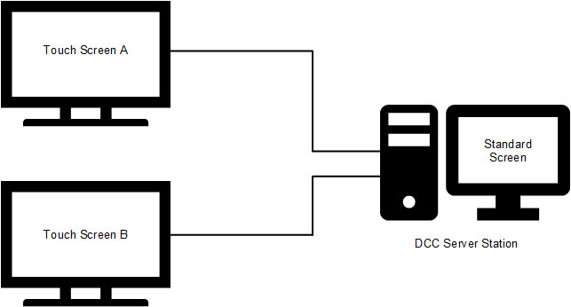
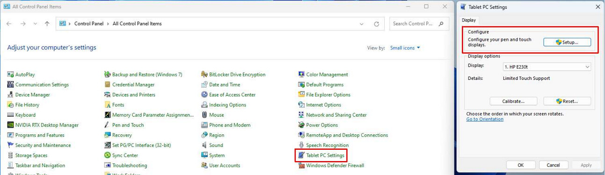
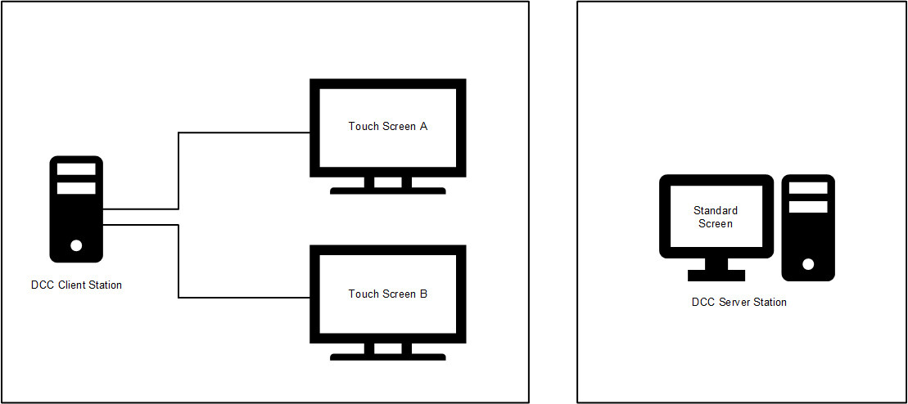

Touch Screens
Scenario
You want to configure Desigo CC as a multi-monitor system with touchscreen displays for the following specific purpose:
- Main screen: linked to the server station, used to manage the site project (engineering, events, macros, reports, etc.).
- First touch screen: linked to the server or a client station, and used to display the main graphic of the site. If there is only the main screen, you can use it to navigate between different views to select the building you want to operate on, or to select the detailed view of a floor.
The goal is to provide the user with a set of current states and commands so as to: - Check the current state of devices group (on/off/opened/closed) by means of graphical LEDs.
- Activate/de-activate group of devices (LEDs, doors, elevators, etc.) by means of touch buttons.
- Second (or more) touch screen(s): linked to the server, or to a client station(s), and used to display more detailed views (floors, rooms, custom controls, etc.).
Depending on the physical placement of the monitors, the hardware configuration can be implemented according to different configurations, shown here with the typical 3-monitor configuration:
A) One server station connected to the three monitors.
B) One server station connected to the main monitor and one client station connected to the two touch-screen monitors.
NOTE: The following procedures apply to Windows 10/11 based systems.
A) Configuration of the server station linked to the three monitors.
- One standard monitor for Flex/Standard Client application.
- Two touch-screen monitors.

- Turn off the server station PC.
- Connect the DVI/HDMI/DP ports and USB cables (for touch management).
NOTE: Do not connect the cables when the PC is switched on. - Turn on the server station PC and configure the position of the monitors.
- In the Windows Display Settings, configure the non-touch monitor as the Main Display, regardless whether it is marked as 1, 2 or 3 and so on. The monitor can also be configured to be vertical.
- Perform touch calibration for the touch-screen monitors. This allows you to ensure that a touch control matches its physical screen:
- Open the Windows Control Panel.
- Select Tablet PC Settings.
- In the Tablet PC Settings section, click Setup. - Follow the on-screen instructions to calibrate the touch screen.

Separate touch screen settings.
If the calibration of a touch screen does not reflect the correct monitor, you may experience that, touching the screen on monitor A, the touch effect is happening on monitor B.
If you strictly followed the above instructions, a possible solution could be calibrating one monitor at a time. This is possible by disabling the touch-screen driver of each monitor, in turn. Proceed as follows:
- Restart the PC.
- From Windows Device Manager, disable the touch-screen driver for monitor B.
- Perform the calibration for touch screens as explained above.
- Restart the PC.
- Disable the touch-screen driver for monitor A and enable the touch-screen driver for monitor B.
- Perform the calibration for touch screens again.
- Restart the PC.
- Enable the touch-screen driver for monitor A.
At this point, after two separate calibrations, both the monitors should correctly receive the touch commands.
B) Configuration of server station linked to the main monitor and one client station linked to the two touch-screen monitors.
- On the server, one standard monitor for Flex/Standard Client application.
- On the client, two touch-screen monitors.

- Set up a server/client infrastructure to let the server station to communicate and send graphics with touch commands to the client station.
NOTE: The server station does not require any additional configuration. - Turn off the client station PC.
- Connect the DVI/HDMI/DP and USB cables (for touch management).
NOTE: Do not connect the cables with the station on. - Turn on the client station PC and configure the position of the two (or more) monitors.
- Perform touch calibration for the two touch-screen monitors. This allows you to ensure that a touch control matches its physical screen:
- Open the Windows Control Panel.
- Select Tablet PC Settings.
- In the Tablet PC Settings section, click Setup. - Follow the on-screen instructions to calibrate the touch screen.
NOTE: If you are having problems, see also the separate screen settings discussed above for Configuration A.